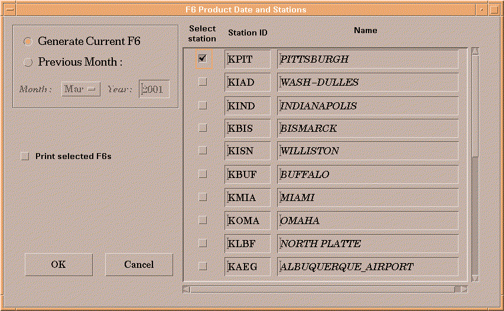

F6 CREATION HELP PAGE

This option provides a tabular depiction of the climate data for a chosen month.
The first option is to create the F6 product for the current month through the
current day. The other option is to create a product for a previous month by
selecting the desired month from the option menu and entering the year into
the year field.
From the station list on the right, select the stations for which an F6 is to be
generated. They can be printed to the local printer by checking the Print
selected F6s button. The products will be output into the text database
with the PIL SSSLCDMMM, where SSS represents the three-letter station id and MMM
is the three-letter month (ex. Pittsburgh's F6 for the month of March would
be saved as PITLCDMAR)
Return to Main Climate GUI Help Page